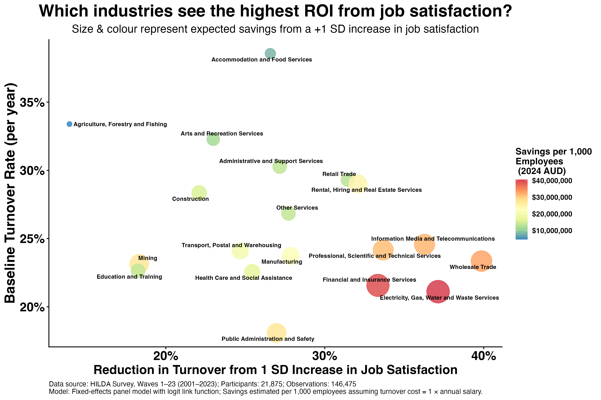

We know that improving job satisfaction reduces turnover, saving organisations millions in replacement costs.
But not all industries are equal. The financial return on keeping employees happy depends on two variables:
1) The Cost of Turnover: Proportional to salary (higher wages = higher replacement costs).
2) The "Sensitivity" of Turnover: How strongly does a drop in satisfaction actually predict an exit? In some sectors, dissatisfaction leads to immediate resignation; in others, employees endure it.
Because these vary, there is no one-size-fits-all ROI.
We analysed over two decades of data from the HILDA survey (23,000+ people). We modelled the relationship between satisfaction, turnover probability, and turnover cost (assumed to be 1x annual salary) to find the ROI of investing in job satisfaction for each major sector.
The results are shown in the chart below.

While satisfaction impacts turnover everywhere, the financial argument for investing in job satisfaction is strongest in these top 5 industries. These are industries that have high average salaries (and thus replacement costs) AND a workforce where satisfaction is strongly linked to retention.
- Electricity, Gas, Water & Waste Services: ($40.5m savings per 1,000 employees)
- Financial & Insurance Services: ($39.3m)
- Wholesale Trade: ($33.0m)
- Information Media & Telecommunications: ($31.7m)
- Professional, Scientific & Technical Services: ($31.1m)
What This Means for Leaders
Employee satisfaction matters across the board. But if you lead in these top five sectors, budget allocated to employee experience and culture is a particularly critical defensive strategy to protect the bottom line against multi-million dollar turnover costs. A drop in satisfaction in the Utilities or Finance sector carries a price tag nearly 8x higher than the same drop in lower-cost, lower-sensitivity industries. So employee satisfaction is not just a "soft" metric, it's an important risk management tool with quantifiable financial impact.